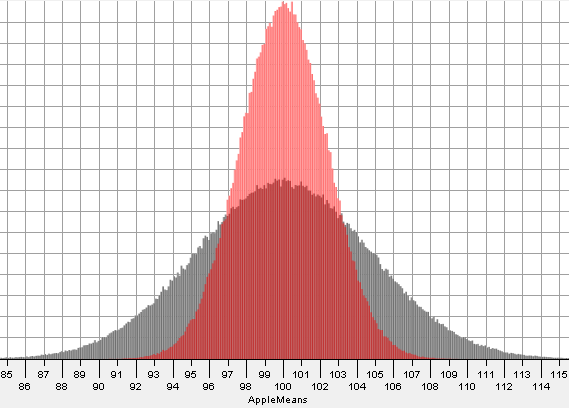

A parameter is a characteristic of a population, while a statistic is a characteristic of a sample
Often, statistics are used to estimate parameters
A parameter would be \(\mu\), while the statistic would be \(\overline{x}\)
For a proportion, the parameter would be \(p\), while the statistic would be \(\hat{p}\)
When you have a dataset, you often need to take a sample of it
If you take many repeated samples of the same size, and determine \(\overline{x}\) or \(\hat{p}\) from each one, and plot each value, you should end up with a sampling distribution
The concept of sampling variability states that one sample will probably differ from the next
A statistic's variability is essentially the spread of the sampling distribution
Dependent on the sample size \(n\)
A larger sample size leads to a lower variability because the statistic is more likely to gravitate to the actual parameter

A sampling distribution is represented by a curve, with either \(\overline{x}\) or \(\hat{p}\) on the x-axis, with the frequency/probability of the value on the y-axis
Ideally, with a large sample size, should look like a normal distribution
Sampling distributions can be described through their accuracy
We say a statistic is an unbiased estimator of a parameter if the statistic's sampling distribution's mean is equal to the parameter
Generally, the sample mean or proportion will be an unbiased estimator is the sample if taken properly
Things like the standard deviation, variance, or range will be biased estimators, which will tend to under or overestimate values
Therefore, to relate the standard deviation of a population to that of the sampling distribution, you will need to perform some operations which will be covered later on
Larger sample sizes make the statistic more precise, regardless of accuracy
Bias indicates constantly missing, accuracy means hitting near the target, precise means how close together the guesses are
A sampling distribution is not to be confused with the distribution of sampling data
This is just the distribution of data within one sample, while the sampling distribution is the distribution of the sample means / sample proportions
The following notes for this unit will discuss dealing with sampling distributions that have known population parameters.